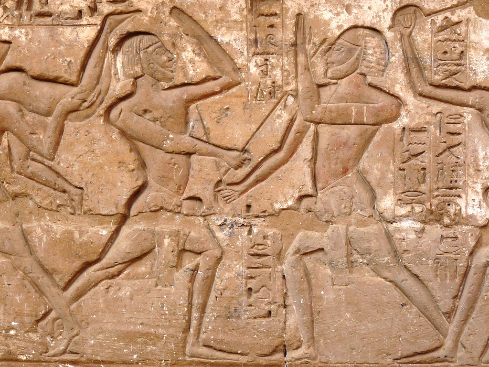

My Martial Arts Journey
Written by John Davis
My first introduction to the Martial Arts helped define me as a person. Growing up as an overwieght kid who valued learning was a struggle! I had to endure bullying and the social awkwardness of trying to fit in a world that valued sports and entertaiment over education, so it can be said that I had anger issues. Here is where my path begins.....
The Martial Art of Boxing.
My first introduction the Path of the Peaceful Warrior was the Art of Boxing or I call it the The Art of the Golden Gloves. My father noticed that I head a quick temper and decided to teach me to box. He was an avid boxing fan and had boxed for his highschool team! He bought me a bag, some 12 ounces gloves, and a weight set! He taught me that the history of the art dates back to Egypt around 3000 BC. I feel in love with the physical aspect of the sport and the life lessons it teaches you!
The Art of The Empty Hand.
I had always loved martiaL arts movies as a kid! The Last Dragon, The Best of the Best, Enter the Dragon, The Seven Deadly Venoms are just a few of my favorites! Unfortunately there were no schools near my neigborhood, so all I could do was watch the movies and dream! I was introduced to the Art of Shotokan Karate in college!! We had to take a physical fitness class, so I chosse Karate! My instructor was Sensei Jeff Mullen and our class meet three times a week! Sensei Mullen was introduced to the art of boxing when he was young and ironically had the same boxing instructor my dad had in highschool! Sensei Mullen taught us the history or the art and japanese culture. He once complimented me on the power of my round kick! I finished with a yellow belt.
The Art of the Hand and Foot.
Years later on my 30th birthday, I decided to set goals for my self!! I wanted to learn other languages, travel more, get some I.T. certification, get a black belt, etc., A week later I was at the mall visiting and old acquitance who had a business in the mall, when I met the man who would help me be to achieve my goal of getting a black belt! His name is Reverend Bobby Hawkins Sr. He is an pastor of a church, the owner of Genesis Black Belt Academy and one of my closest friends!! Pastor Hawkins is getting ready to test for his 8th Degree Black in Songham Taekwondo! He hold several black belts in multiple disciplines! Chung gi taekwondo, pasaryu and Kyokushin karate, and Krav Maga to name a few! He helped me understand that there are no limitations to what you can do if you have a willing mind! I received my black belt in 18 months, my 2nd degree two years later, and was close to geting my 3rd degree!! I learned patience, discipline, and humility when I joined the instructors program! It was awesome!
The Montu Arts.
Becoming a student of the Montu Arts is my next goal and journey towards becoming a better warrior and harbinger of peace. The Montu arts are the first martial arts styles in recorded history and it's origins start in Africa! I look forward to learning Nuba wrestling, Zulu stick fighting, Shanci, and Kokawa to name just a few of the art forms. The is a quote attributed to the Buddha that states "When the student is ready, the teacher will appear." I am waiting and ready.